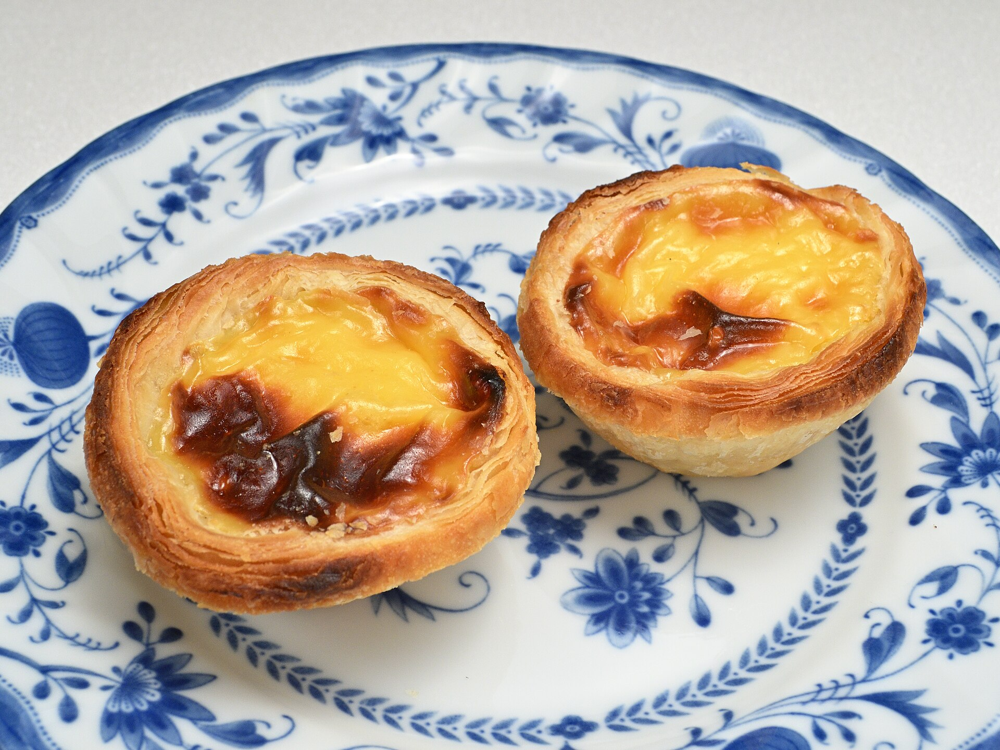

Pasteis De Nata

Description
Portugal's most beloved pastry and arguably the world's.
Monks used egg yolks to starch their habits and the leftovers became these golden, custard-filled tarts.
The secret recipe has been kept under lock for nearly two centuries.
Flaky, creamy, lightly charred on top... One bite and you'll understand why the Portuguese are so protective of them.
Ingredients
- 230g sugar
- 100ml water
- one cinnamon stick
- one lemons worth of zest (in strips)
- 55g flour
- 530ml whole milk
- one vanilla pod
- 6 egg yolks
Steps
Make the filling the day before you want to bake.
- In a saucepan, combine the sugar, water, lemon strips and cinnamon stick. Heat on medium-high, stirring regularly, until it reaches 104°C. Remove from heat and let sit for 15 minutes.
- Meanwhile, whisk the flour and roughly 50ml of milk in a small saucepan off the heat until you get a smooth paste. Add the rest of the milk and heat on medium, whisking constantly, until slightly thicker than double cream. Add the vanilla pod, then stir in the sugar syrup with all the bits.
- Leave to cool a little at room temperature, then mix in the egg yolks. Strain through a sieve, cover and refrigerate overnight.
- For the pastry, mix flour, salt and water in a bowl by hand until incorporated. Tip onto a surface and knead until smooth, about 10 minutes. Place in a ziplock bag and refrigerate for 20 minutes.
- Slice the butter into roughly eight rectangles. Between two sheets of baking paper, roll the butter into a 15cm x 20cm slab. Refrigerate for 20 minutes.
- Roll the dough out to roughly the size of the butter slab. Pull each side out to create four flaps with a thicker central rectangle. Place the butter on the centre and fold the flaps over to fully enclose it.
- Roll out until just under three times its length (roughly 50-55cm). Fold the top third down, then the bottom third over the top. Turn 90 degrees and repeat. Wrap and refrigerate for 20 minutes.
- Roll out to roughly 20cm x 35cm, about 0.5cm thick. With the long side facing you, roll the pastry tightly into a log. Wrap and chill for at least 1 hour.
- Preheat your oven to 260°C fan with a baking tray inside for 20 minutes.
- Remove the pastry from the fridge and let it sit at room temperature for 10 minutes. Slice into 17g pieces.
- Grease each tin and place a slice flat side down. With a wet thumb, press each piece into the tin so the base is thin and the pastry reaches the top edge. Re-wet your thumb regularly to prevent sticking.
- Fill each case with the custard until almost overflowing. Carefully transfer to the hot baking tray, place in the oven and reduce the temperature to 250°C.
- Bake for 8-10 minutes, until the pastry is dark golden and the filling is browning on top.
- Let them sit in the tins for a few minutes, then remove carefully with a knife and place on a cooling rack. They keep in the fridge for 3-4 days.
Eat warm - straight from the oven or reheated. Reheating brings back the crispness of the pastry.
Casa